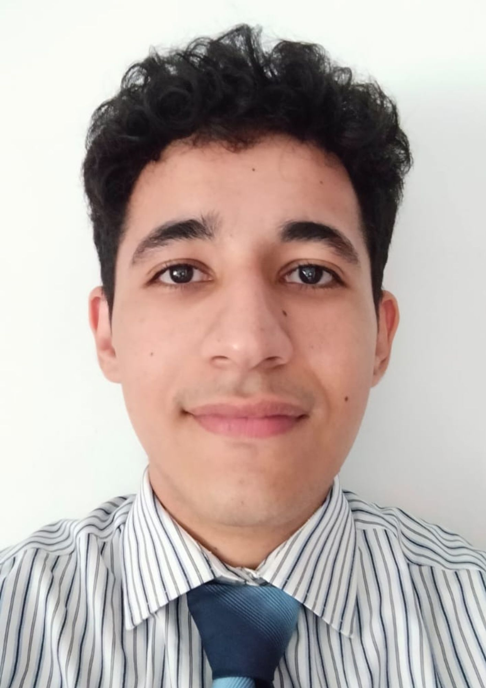

Fernando Pedro Fleitas Báez

Analista de Sistemas
Soy una persona proactiva y creativa, con una gran pasión por el aprendizaje continuo. Me gusta trabajar en equipo y enfrentar nuevos desafíos, siempre buscando soluciones innovadoras y eficientes. Mi compromiso y dedicación me permiten alcanzar metas y contribuir positivamente al entorno laboral.
Experiencia Laboral
Pasante Informático - Empresa Salemma Retail S.A, Feb 2019 - Julio 2019
- Actualización y mantenimiento de Software y Hardware.
Educación
Universidad Católica "Nuestra Señora de la Asunción"
- Lic. Analista de Sistemas, 2021 - Actualidad
Colegio Técnico Kolping
- Bachillerato Técnico en Informática, 2017 - 2019
Habilidades
Cursos
- Curso de Robótica - Servicio Nacional de Promoción, Profesional SNPP, 2018
- Principios y herramientas básicas de computación - Ministerio de Tecnologías de la Información y Comunicación
- Auxiliar Administrativo - Servicio Nacional de Promoción, Profesional SNPP, 2024
- Formalización Laboral para MiPYMES - SNPP, 2024
Herramientas de Software
- Programación en Python (1 año de experiencia)
- Programación en SQL (1 año de experiencia)
- Programación en HTML (2 años de experiencia)
- Programación en PHP (2 años de experiencia)
- Programación en C++ (1 año de experiencia)
Referencias:
Arq. Sandra Zavala
Dra. Rosa Zavala
Ing. Roberto Escobar